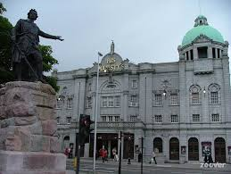
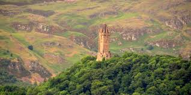
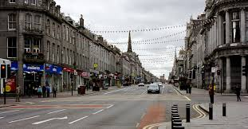
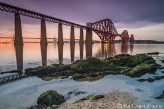
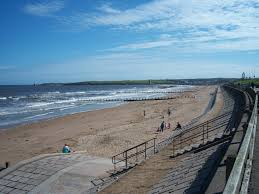

Page 2
Page 3
Page 4
Page 5
html {
background: url(download.jpeg) no-repeat center center fixed;
-webkit-background-size: cover;
-moz-background-size: cover;
-o-background-size: cover;
background-size: cover;
}
History of Aberdeen

"The origin of the name Aberdeen is far from clear. In his book A Thousand Years of Aberdeen, Alexander Keith explains that some Gaelic scholars believe it to come from 'Aber' and 'da-aevin' meaning "the mouth of two rivers". Adding weight to this is the Roman name Devana, which could clearly have come from 'da-aevin'. Others say Aberdeen comes from its location at the mouth of the Don. Another theory is that it derives from the Norse 'Apardion'.
In its early days Aberdeen consisted of two settlements, one in what is now Old Aberdeen, near St Machar's Cathedral, and another on St Katherine's Hill by the harbour. The town's first charter was granted by William the Lion in 1179."

"Aberdeen became a centre of education with the founding of Kings College by Bishop William Elphinstone in 1495. The University of Aberdeen results from the merging of Aberdeen's two universities: Kings College and Marischal College in 1860."

"The shaping of modern Aberdeen began in the latter part of 18th Century. At that time Aberdeen was crowded onto St Katherine's Hill (at the east end of Union Street), above the harbour. Expansion of the city was restricted by the Denburn Valley to the west."

"It is said this is the root of the mean image the city gained through "music hall" jokes. With the administration bankrupt, influential visitors to Aberdeen had to do without the expected civic reception."

"A more recent milestone in the city's development was the discovery of North Sea Oil in 1969 and the development which led to Aberdeen becoming the Energy Capital of Europe. Always an internationally-minded economy, Aberdeen has proven itself to be equally international in its thinking in the oil and gas industry and it is now an upstream oil centre second only to Houston in Texas."